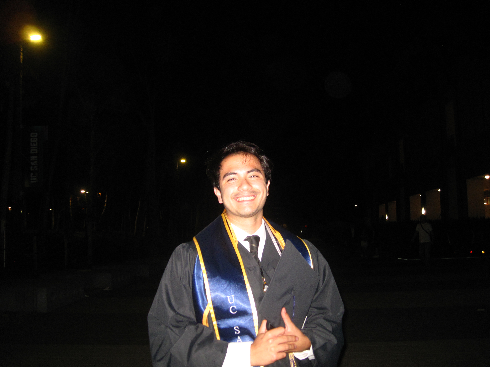

I study the interstellar medium and am currently mapping CO-dark molecular hydrogen in the nearby galaxies M31 and M33 with Prof. Karin Sandstrom's group. Headed toward a PhD in astronomy.

I'm a recent physics and astrophysics graduate from UC San Diego, who is interested in bridging the connection between the overall structure and evolution of galaxies and their individual constituents. I am currently doing post-baccalaureate research before applying to astronomy PhD programs. My work sits in the interstellar medium, using dust and gas tracers to find molecular hydrogen that's invisible to standard CO surveys. Outside research, I also mentor and tutor students from a variety of backgrounds and participate in outreach.
Ever since I was 11 years old, I have been captivated by the deep unknown of our universe. I developed a passion for learning about physics and astronomy which has led me to wonder why our universe is the way it is. I now focus this curiosity into my research and attempt to answer new and unique questions that may help explain the structure of our universe. I am actively working towards making this my fulltime career in order to facilitate new scientific discoveries and help teach and inspire others who share the same curiosity.
Working with Prof. Karin Sandstrom to map H₂ that standard CO surveys miss, using dust emission as an independent tracer of total gas column in the Andromeda and Triangulum galaxies. Building and debugging the analysis pipeline; preparing a first-author paper for RNAAS.
My interests include studying how galaxies change over time and how black holes within these galaxies co-evolve with their host environments. I also am interested in the detection of these black holes themselves throught the use of gravitational waves and their electromagnetic counterparts.
Full CV — education, research, teaching, and outreach experience.
Download PDF